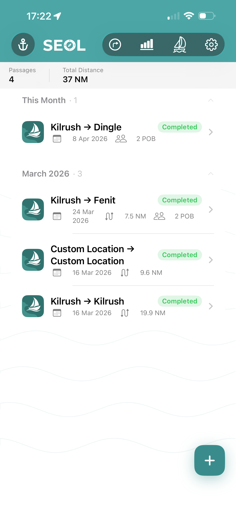
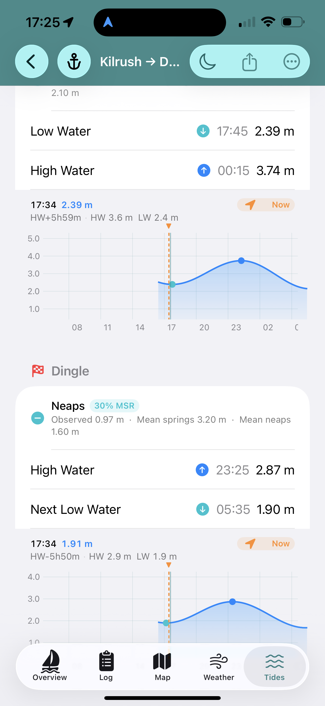
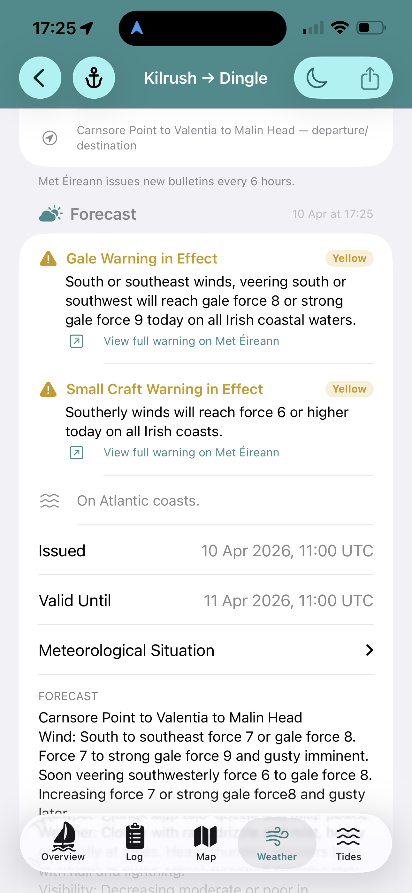
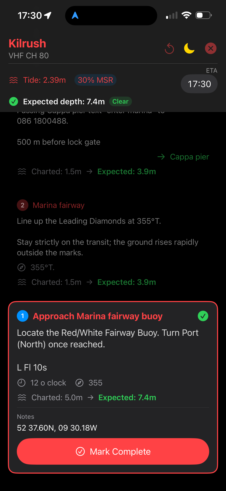
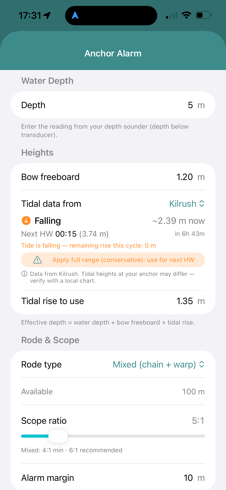
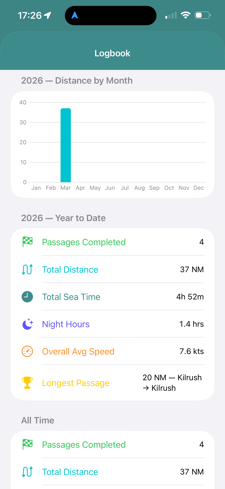
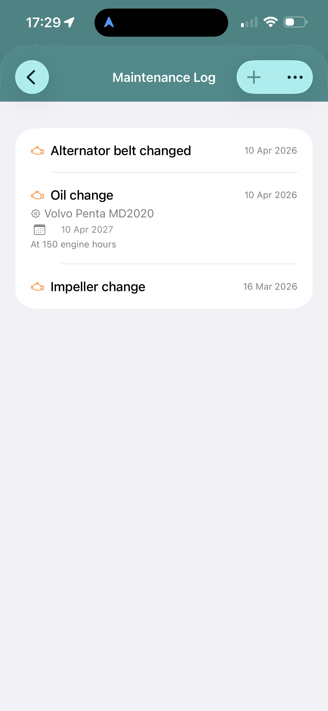

About Seol
A native iOS app for planning and recording sailing passages in Irish waters.
Plan your passage before you leave, log it as you sail, and review it when you're back. Tidal predictions, crew, waypoints, weather, and your ship's log — all in one place, synced privately across your devices via iCloud.
Your data is stored on your device and synced via iCloud. It is never shared with third parties.
Getting Started
Up and running in a few minutes.
-
Set up your vessel Go to the Vessel tab and enter your boat name, type, call sign, and MMSI. Add your sails to the wardrobe.
-
Create a passage Tap + on the home screen. Enter your departure and destination, add waypoints, and set your departure date. Tidal predictions and weather will load automatically.
-
Check your tides Open the Tides tab on your passage. Review HW/LW times and the tidal curve for your ports. Adjust if needed.
-
Start the passage When ready to go, tap Start Passage. GPS positions log automatically. Add manual log entries as you go.
-
Complete and review Tap Complete Passage when you arrive. Your logbook summary updates automatically with distance, sea time, and engine hours.
Features
Everything you need from planning to arrival.

Passage Planning & Logging
Create passages with departure and destination ports, waypoints, crew, and sails. GPS positions log automatically while underway. Add timestamped log entries for wind, sail changes, engine use, and incidents. Review completed passages in your logbook.

Live Tidal Predictions
HW/LW times and heights from the Marine Institute Ireland, UKHO, and WorldTides for Irish, UK, and offshore ports. Tidal curve shows your depth window at any point in the passage. Springs and neaps clearly marked.

Weather
Sea area forecasts from Met Éireann fetched at passage creation. Record weather observations en route and compare against the forecast afterwards.

Pilotage Guides
Build reusable harbour entry guides with step-by-step cards. Each card shows depth clearance, bearing transits, and VHF channels. Work through card by card on approach with live tidal depth calculations. Night mode included.

Anchor Watch
Scope calculator accounts for depth, tidal rise, chain, and warp. Arm the alarm and Seol monitors your position — alert fires if the boat drags beyond your set radius.

Logbook Summary
Total distance, sea time, night hours, engine hours, and fuel — year to date and all time. Monthly distance chart, route breakdown, and sail usage statistics across your entire logbook.

Vessel & Maintenance
Vessel profile with registration, call sign, and MMSI. Sail wardrobe with usage tracking. Maintenance log with service reminders by date or engine hours. Equipment inventory with low-stock and expiry alerts. PDF export for both.
Also Includes
Float Plan
Generate and share a formatted float plan with vessel details, crew manifest, and waypoints before departure.
iCloud Sync
Passages, vessel records, and pilotage guides sync privately across all your iOS devices.
Offline Use
Works fully offline once tidal and weather data is loaded. No connection needed at sea.
PDF Export
Export your maintenance log and equipment inventory as PDFs for insurance or yard records.
Designed for Ireland
All Irish sea areas. Magnetic variation pre-set for Irish coastal waters.
No Account Required
No sign-up, no subscription. Your data stays on your device and iCloud account.
Support
If you have a question, found a bug, or would like to suggest a feature, get in touch by email. During the beta, feedback on anything confusing or missing is especially welcome.
Contact SupportPrivacy
Seol collects only the data you enter and the GPS positions recorded during your passages. All data is stored on your device and synced via iCloud. No data is sold, shared, or used for advertising. No analytics or tracking SDKs are included.